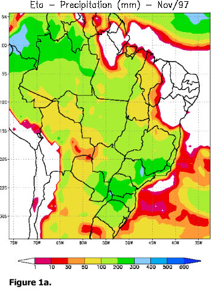
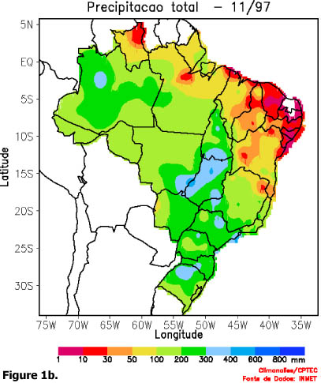
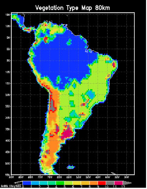

Sin Chan Chou — CPTEC - Centro de Previsão do Tempo e Estudos Climáticos (INPE) (SA-PI)
Yongkang Xue — University of California, Los Angeles (US-PI)
1) The general goals
In this project, we propose to use the regional Eta model coupled with
a biosphere model, SSiB, to investigate hydrometeorological prediction
in the Amazon Basin at seasonal to interannual time scales and the effects
of deforestation on circulation and rainfall, in particular, the annual
cycle of convective activity. The land cover and the soil properties will
be specified using remotely sensed data and derived data based upon observations,
respectively. Several important parameterizations, including soil hydrology,
stomatal resistance, and convective processes, will be investigated to
elucidate the mechanisms of land-atmosphere interactions in South America
and evaluate the sensitivity and uncertainty of these interactions in model
simulations. The observational data from LBA will be applied to these studies.
The ultimate goal is to improve the hydrometeorological prediction in the
LBA region by improving the land surface components in a coupled regional
model.
In our research efforts, the prediction of rainfall in the Amazon Basin
will be a major focus. The spatial and temporal distribution of precipitation
in the Amazon Basin largely depends on convective activity. In a recent
study, Zhou and Lau (1998) infer that the austral spring, summer, and fall
rainfall activity in South America has characteristic features of a monsoon
climate system. Our main focus in this proposal is on seasonal-to-interannual
prediction, especially prediction of this annual convective activity, and
its relation to land surface processes.
2). Models and predictions for this study
The NCEP Eta regional model will be used for this study. In a recent
study, conducted with a later version of the Eta/bucket model by Dr. Chou(Co-I)
and her colleagues at the Center for Weather Prediction and Climate studies (CPTEC), a one-month forecast was performed for November 1997. The general
pattern of the forecast precipitation is comparable with the observations,
however a dry bias can be identified over Northeast Brazil and the Northern
coast (Figure 1). A coupled Eta/SSiB model (Xue et
al., 1996) will be used for LBA study. Figure 2 is
the South American vegetation map for Eta/SSiB.
In this proposal, we will use Eta/SSIB to conduct 12 month integrations
with climatological sea surface temperature (SST) data as surface boundary
conditions over the ocean. The role of land surface processes in simulating
the annual hydrologic cycle will be investigated. The El Nino and La Nina
have substantial impact on South American precipitation. After the completion
of the above- mentioned integrations, SSTs from a typical El Nino year
and a typical La Nina year will be used as the boundary conditions for
additional integrations. During the LBA, measurements will be taken at
different scales. These data will allow the establishment of a profile
of the vertical structure of the troposphere inclusive at canopy levels.
The model will be validated against the observations and analyses.
3). Impact of land cover/land cover change on the South American
hydroclimatology
Amazon is the largest continuous region of tropical rainforest in the
world, and a large amount of the original tropical forest has been lost
to deforestation. Sensitivity study has shown it may have substantial impact
on regional climate (e,g,, Xue et al., 1996a). With satellite remote sensing
data, the scales and locations of Amazonian deforestation have been quantified
and assessed with reasonable accuracy. Using these remote sensing assessments
instead of the hypothetical estimates of the deforestation, the GCM studies
on the hydrometeorological impacts of deforestation will be more realistic.
In this study, satellite data will be used for experimental designs
in deforestation scenarios. Data from Thematic Mapper (TM) and Multispectral
Scanner System (MSS) of Landsat are being used to create land use and deforestation
maps for the tropical areas for the 1970s, the 1980s, and the 1990s. For
the deforestation maps, the project has further aggregated the fine scale
maps into 16km grid maps. Using these land cover/land cover change maps,
we will investigate the methodology to implement land cover change detection
product and how does the land cover change affect the regional hydrometeorological
conditions in South America.
4). Sensitivity of model simulations to parameterizations in the
hydrologic processes
In this project, several important parameterizations crucial to the
hydrologic cycle will be tested, which include soil hydrology, stomatal
resistance, and convective scheme. The observational data from LBA will
be used for these studies. The goal is to elucidate the mechanisms of climate
change in South America and evaluate the sensitivity and uncertainty of
these interactions in model simulations.
4.1. Soil properties
In the Amazon area, there is a wide variety of soil types. The Radambrasil
project (1973-1986) has surveyed and mapped soil types, and produced 1162
soil profiles to a depth of 2m. Tomasella & Hodnett (1998) derived
and tested a PTF using soil data of the Brazilian Amazonia and related
the estimations to the Brooks & Corey (1964) retention parameters.
In this project, we will create an Amazon soil map for the Eta and the
GCM based on Radambrasil's soil tables up to 2 meters. This soil map will
be used for model integration and its results will be compared with those
from current SSiB soil map in the regional model. We will conduct another
experiment, in which the Tomasella and Hodnett parameterizations are used
for the soil. These three tests will provide information regarding the
sensitivity of land-atmosphere interaction to soil processes and improve
the specification of soil condition in the models.
4.2 Parameterizations of stomatal resistance
Stomatal resistance affects the energy partitioning between the latent
heat flux and the sensible heat flux. It is a crucial component of biosphere
models. We plan to introduce the physiological control of photosynthesis
on stomatal resistance to the model. This component of the photosynthetical
control in stomatal resistance model not only adds more constrains on the
fluxes through the stomata but also produce CO2 flux estimates. Because
the current physiological approach requests substantial amount of computer
time and is too complex for a GCM or a regional model, some simplification
will be made.
In the current physiological approach of stomatal resistance modeling,
the gross CO2 assimilation rate is limited by three rates: the efficiency
of the photosynthetic enzyme system, the reproduction rate of
Ribulose-bisphosphate,
and the leaf capacity to export or utilize the products of photosynthesis.
we plan to simplify the computation in the co-limitation regime, which
will allow us to solve the equations analytically. Therefore, it will substantially
simplify the computation.
4.3 Convective schemes
The convective activity is a crucial hydrometeorological process in
the Amazon Basin. However, the convective processes and its influence on
model simulation are uncertain. We will conduct investigation to study
the role of moist convection in transferring the energy and to identify
the uncertainty in tropical land-atmosphere interactions caused by the
cloud scheme. Two cloud schemes: a modified Betts and Miller scheme and
a prognostic cloud scheme called McRAS (Microphysics of clouds with Relaxed
Arakawa-Schubert Scheme) will be used in the Eta model for comparison.
The cloud scheme will also be evaluated using the LBA data. LBA will couple
with the TRMM program to provide polarimetric and Doppler radars during
the wet season in Rondonia. Besides the precipitation estimated from the
radars, the identification of hydrometers, their shape and size, and the
circulations within the convective cells will help in the validation of
the cloud schemes.
4.4 LBA data applications
The parameterizations discussed above will be investigated using observational
data from LBA field measurements. During the LBA, measurements will be
taken at different scales including about 11 instrumented towers. In the
application of LBA field data, we will collaborate with Dr. D. Fitzjarrald
of the State University of New York (SUNY) at Albany for the LBA research.
References
Zhou and Lau, 1989: Does a monsoon climate exist over South America?
J. Climate.
Xue, Y., H.G. Bastable, P. A. Dirmeyer, and P.J. Sellers, 1996a: Sensitivity
of simulated surface fluxes to changes in land surface parameterization
-- a study using ABRACOS data. J. Appl. Meteor., 35, 386-400.
Xue, Y., F.J. Zeng, K. Mitchell, and Z. Janjic, 1996f: The impact of
land surface processes on the prediction of the hydrological cycle over
the U.S.- A study using a coupled ETA/SSiB model. Preprint of Second International
Scientific Conference on the Global Energy and Water Cycle, 73-74.
Images
Figure 1.

Figure 2.
